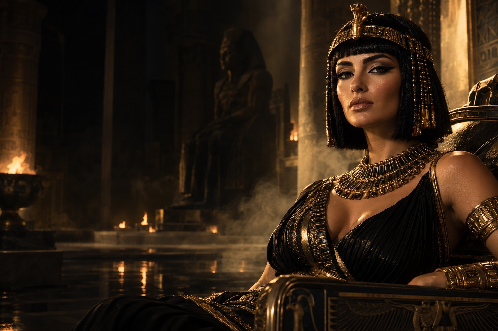
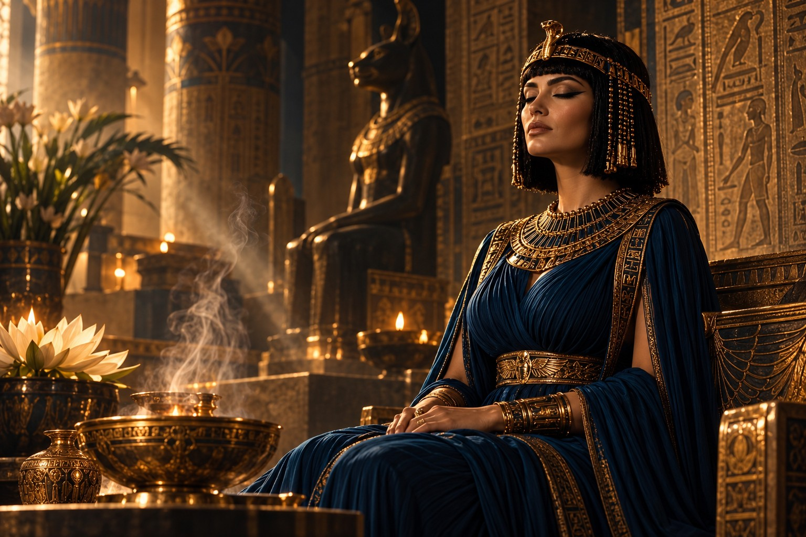
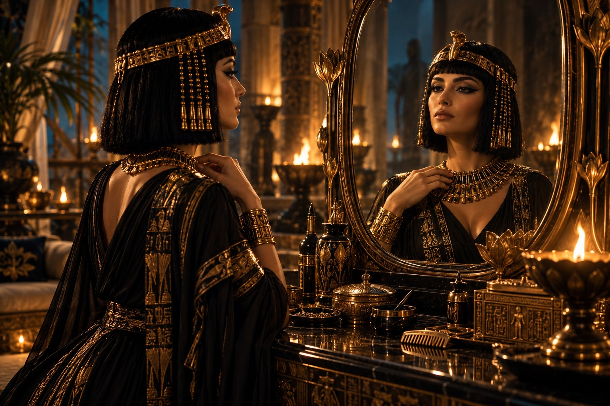
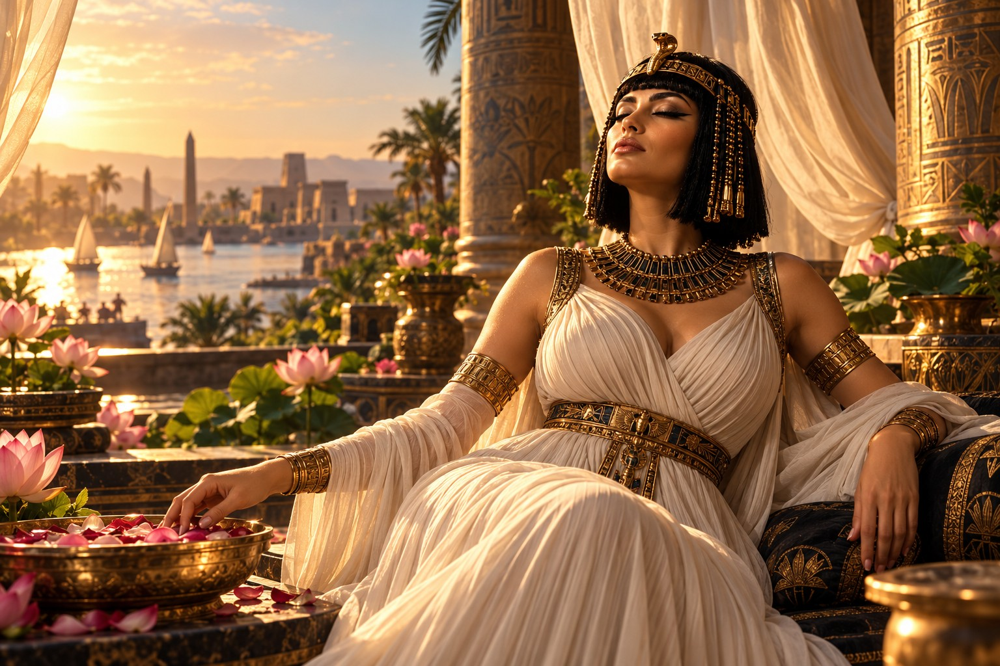
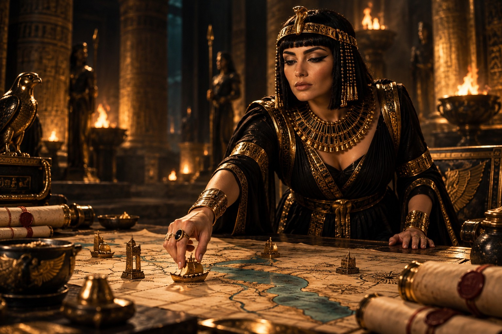
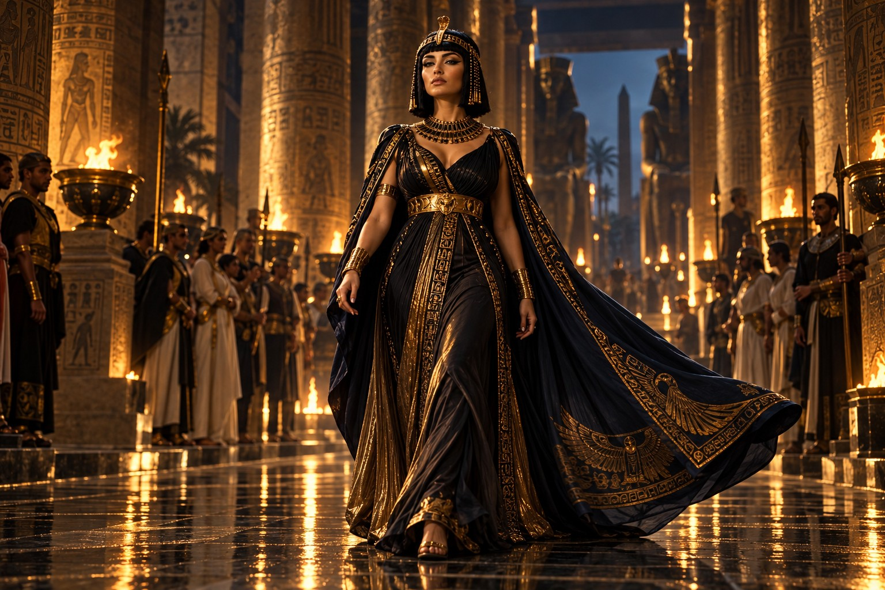
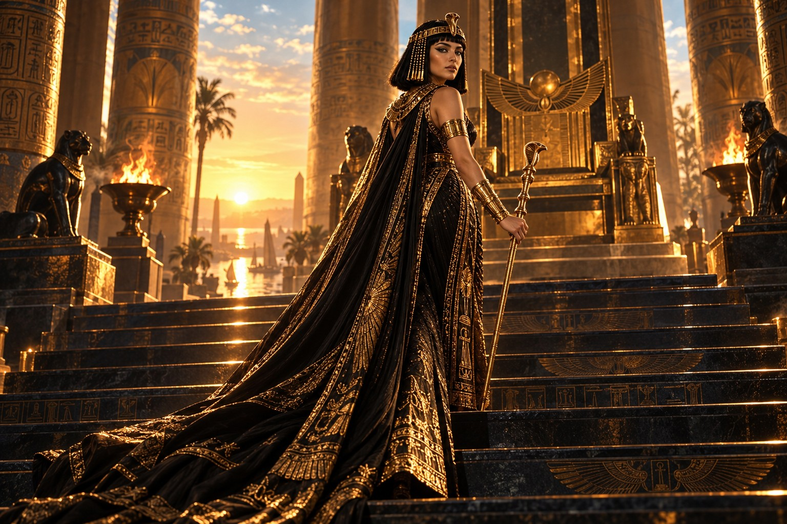
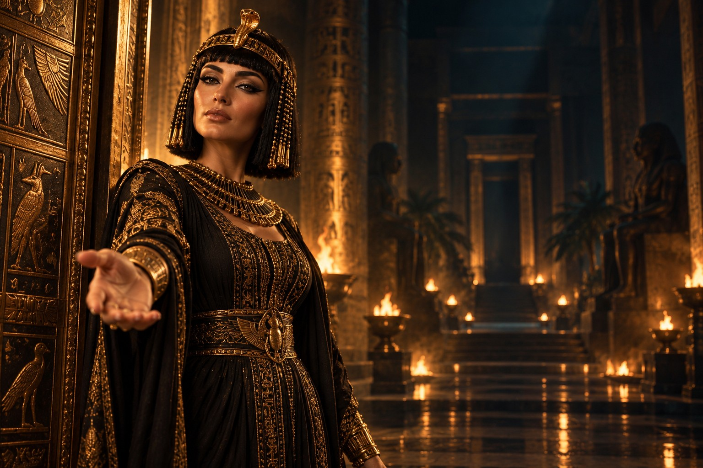
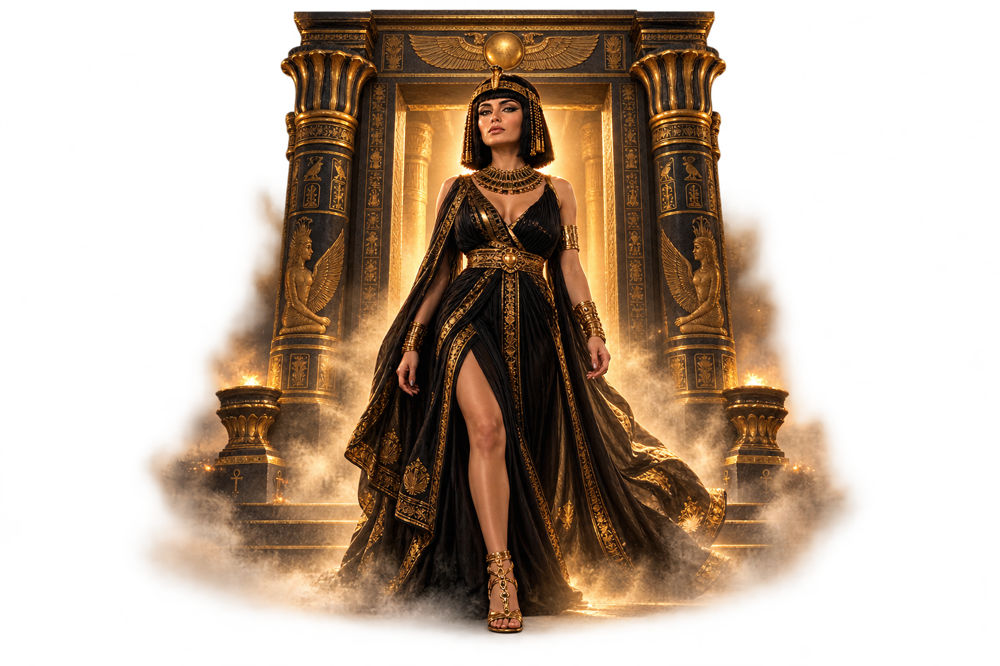

Símbolos que despertam.
Narrativas e símbolos de poder ajudam a construir uma relação significativa com as qualidades de Cleópatra.

Entre no universo de Cleópatra através de 7 ativações imersivas. Uma jornada pelo fascínio, pela sensualidade e pela presença magnética de uma rainha.
QUERO VIVER O PODER DE CLEÓPATRA ↗Entre chamar atenção e despertar fascínio. Entre estar presente e fazer sua presença ser sentida, mesmo à distância.
Porque o verdadeiro magnetismo não termina quando você vai embora. Ele também está na lembrança que você deixa.
Existe uma diferença entre estar exposta à imagem de um arquétipo e estabelecer uma conexão psíquica com ele.

Talvez você já tenha colocado imagens arquetípicas no celular, ouvido frequências sonoras ou repetido afirmações esperando sentir algo diferente.
Pense em uma bandeira. Para quem desconhece sua história, ela pode ser apenas um conjunto de cores. Para quem conhece seu significado, o mesmo símbolo pode despertar sentimentos intensos.
No Código do Magnetismo, imagens e sons fazem parte de uma experiência construída para envolver sua imaginação, seus sentidos e suas emoções.
Conheça a experiência ↗Inspirado na psicologia analítica de Carl Gustav Jung, no simbolismo e em práticas de imaginação ativa, o método propõe uma conexão com as qualidades que ela representa.
Narrativas e símbolos de poder ajudam a construir uma relação significativa com as qualidades de Cleópatra.
Vivências em primeira pessoa nas quais imagens, sons, imaginação e sensações trabalham em conjunto.
Uma abordagem simbólica para explorar essas qualidades no seu sentir, pensar e agir.
Do primeiro olhar no espelho ao último degrau do trono. Percorra cada camada e descubra o que ela convida você a explorar.
Antes de ser vista pelo mundo, encontre o seu próprio olhar.
Diante do espelho, Cleópatra reconhece a mulher por trás da coroa. A jornada começa nesse encontro: uma experiência simbólica de autoestima, autovalorização e presença.
Você não precisa se tornar outra mulher. Comece por reconhecer a sua força.
Continue a experiência ↓
Agora, suavize a armadura. Há poder em se abrir.
O sol toca a pele. O linho acompanha a brisa. Entre flores de lótus e luz dourada, Cleópatra se permite uma pausa. Esta vivência explora receptividade, merecimento e abertura ao prazer e a novas possibilidades.
Nem toda conquista começa com esforço. Algumas começam com permissão.
Continue a experiência ↓
Quando você reconhece seu valor, o mundo ganha novas possibilidades.
Entre o ouro, a arte e as rotas do Nilo, Cleópatra percorre os símbolos da abundância. Uma imersão para explorar sua relação interior com oportunidades, conquistas e expansão financeira.
Explore o poder da abundância. Dê espaço ao que pode florescer.
Continue a experiência ↓O fascínio atrai o olhar. A estratégia escolhe o caminho.
Diante do mapa, Cleópatra não espera que decidam por ela. Ela observa, compreende e move a próxima peça. Uma experiência de intenção, clareza e decisão, inspirada em sua inteligência estratégica.
Desperte sua estratégia e influência. Seu próximo movimento começa em você.
Continue a experiência ↓
Um olhar que demora. Um gesto que permanece. A presença de quem se sente à vontade em si.
À luz das lamparinas, Cleópatra se volta com um sorriso sutil. Sua sensualidade está na expressão, no movimento, na liberdade de ocupar o próprio corpo. Uma vivência dedicada ao charme, à sensualidade e ao fascínio.
Explore seu poder de sedução. Permita-se expressar suas próprias nuances.
Continue a experiência ↓Você atravessa o espaço. A impressão que deixa permanece.
O manto acompanha seus passos. Os olhares se voltam. Cleópatra caminha com a serenidade de quem reconhece sua força. Uma experiência simbólica de confiança, magnetismo e presença marcante.
Irradie sua presença. Explore o que torna a sua expressão inesquecível.
Continue a experiência ↓
A sedutora. A estrategista. A rainha. Todas as dimensões se encontram aqui.
Ao alcançar o último degrau, Cleópatra integra sensibilidade, intenção e poder pessoal. A experiência final reúne as sete camadas em um convite para reconhecer sua força, assumir suas escolhas e conduzir o próprio destino.
Não apenas observe uma rainha. Entre na experiência.
QUERO VIVER AS 7 CAMADAS ↗

Sete camadas para explorar o magnetismo, a sensualidade, a estratégia e a soberania que meu nome representa.
Símbolos, narrativas, imagens e sons integrados a vivências conduzidas de imaginação ativa. Cada camada tem uma intenção. Todas fazem parte da mesma jornada.

Atravesse o primeiro portal.QUERO VIVER ESSA EXPERIÊNCIA ↗Uma jornada para quem deseja explorar o poder de Cleópatra e construir uma relação mais consciente com a própria presença.
01Ir além de áudios, afirmações e imagens arquetípicas.
02Explorar sua sensualidade, presença e poder de atração.
03Fortalecer sua confiança para se posicionar e aproveitar oportunidades.
04Vivenciar o simbolismo e a imaginação ativa, além da teoria.
Você não precisa ter experiência anterior.
A preparação inicial orienta sua participação em cada ativação.
Sua jornada de Ativação Arquetípica Imersiva.
Comece pela preparação. Siga pelas sete ativações, organizadas em uma proposta de sete dias.
Algumas respostas para começar sua jornada.
Não. É uma jornada de sete ativações arquetípicas imersivas, acompanhada de uma preparação inicial. O foco está na experiência guiada, e não em aulas teóricas extensas.
O método integra narrativa, símbolos, imaginação ativa e vivências em primeira pessoa, com uma condução estruturada para aprofundar a conexão simbólica.
Não necessariamente. A imaginação pode envolver sensações, emoções, sons e significados, além de imagens mentais. Cada pessoa possui uma maneira própria de vivenciar a experiência.
Não. A preparação apresenta os conceitos necessários para participar da jornada.
Não. As experiências e os efeitos percebidos são individuais. O método oferece uma experiência simbólica guiada, sem garantir mudanças específicas nos relacionamentos, na vida financeira ou em outras áreas.
Não apenas observe o arquétipo. Entre na experiência.
QUERO ATIVAR O PODER DE CLEÓPATRA ↗